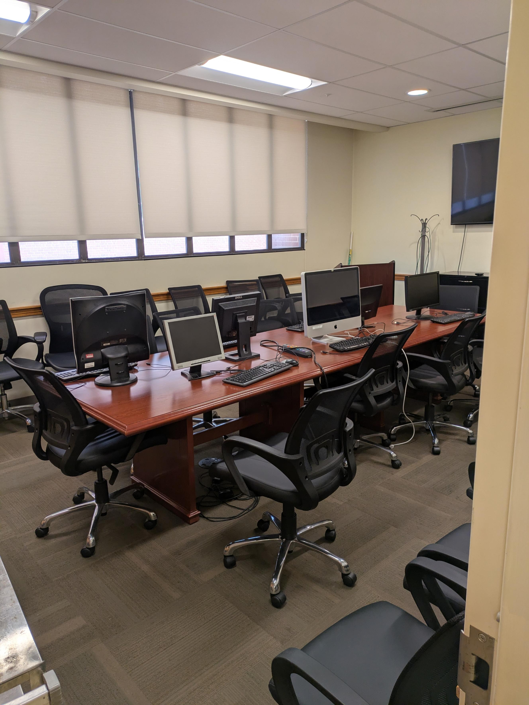

Last updated: Wednesday, December 17, 2025
Click here for the course content and tentative schedule.
To stay in the loop as we finalize course details (start date, days, times), please complete the interest form.
Motivation

“Cytometry in R” is a free weekly mini-course being offered in-person and virtually by the Flow Cytometry Shared Resource staff at the University of Maryland Greenebaum Comprehensive Cancer Center. Its primary audience is for those with prior flow cytometry knowledge, who have no-to-limited previous experience with the programming language R.
While many cytometry enthusiast express an interest in learning how to carry out flow cytometry analyses in R, they often do not know where to start. Additionally, many of the limited existing resources are focused towards users with intermediate bioinformatic skills, contributing to a greater barrier for entry for those just starting out. Our motivation in offering this mini-course tailored towards beginners is to make the learning journey smoother than the one we ourselves experienced.
Rationale

While designing the course, we kept the following concepts in mind:
Beginning coders benefit both by having detailed examples that they can initially work through on their own time, as well as less defined problems that through troubleshooting enable the acquisition of the thought-process and skills needed for coding.
Some topics will take individuals a longer time to fully grasp. Providing a format and resources that enable being able to revisit the material multiple times is incredibly helpful. Likewise, life is busy, and missing a workshop session is highly probable. If this happens, it shouldn’t make or break the ability of the individual to understanding the rest of the course.
Consistency is key, and being able to apply what you are learning to your own datasets, files, and questions of interest helps achieve this.
Cost
Is there a cost to participate? No, it’s absolutely free! Is there a catch? Yes, you learn R, and may wind up with strong feelings about flowframes vs. cytoframes. This is also our first year offering this course, so we will sporadically ask you to fill out a feedback form to help us improve.

Format
Each week, the mini-course will cover a particular topic for an hour. This individual class is offered on multiple days, at different times, both in-person and online. You are invited to attend whichever day best fits your schedule for that week. If life gets busy and you can’t make your regular day, you have an additional four opportunities for that week covering the same topic.
In-person, we are tentatively planning on Monday, Wednesday, Thursdays from 4-5 pm EST in Bressler 7-035. Virtual options are tentatively planned for Tuesday and Friday via livestream on YouTube and the Cytometry Discord. However, final date and times will be determined on the interest, availability, and timezones of interested particants (please do fill our the interest form).
Each session starts with 10-15 minutes of Background about the session topic, and it’s relevance to both R and Cytometry. Over the next 30 minutes, participants work through Hands-on examples, using either their own data, or an example dataset that we will provide. Instructors assist where needed and answer questions during this time. The final 10 minutes we reconvene as a group, Share insights and troubleshoot any remaining stickpoints. Finally, we provide links to useful resources for those who want to learn more about the topic, as well as provide two optional take-home problems.

Each week, we will update the website with the course materials for the week. These will typically consist of the Quarto Markdown document, which is used to explain and run the R code. If you have your own data, you can bring your own data! If you don’t have some, or want to follow along, we will also make available some of our data that you can utilize. All course materials for the given week will be made available online via our course website and course GitHub repository. In our commitment to open-source and open-science, all teaching materials are freely offered under a CC-BY-SA license, while all code examples are offered under the AGPL3-0 copyleft license.
The take-home problems are intended to get you to work with your own data on similar problems in a not-so-structured manner. The challenges you encounter in solving them will help foster the problem-solving/debugging/way-of-thinking skills needed to successfully work with code. Both works-and-progress and solved problems can be discussed and submitted on our GitHub repository to the designated take-home folder of the week, where both instructors and others taking the course can provide feedback.
Computing Requirements

For those attending online, you will need a computer with internet access. Operating system shouldn’t matter, as we will be offering code examples for Linux, Mac and Windows. As with all things flow-cytometry software, a good CPU with multiple cores, more RAM, and greater storage space are generally helpful, but not deal breakers.
You will need to be able to install the required software (R, Rtools, Positron, Quarto, and Git) as well as intstall and compile R packages from the CRAN and Bioconductor repositories (as well as a few GitHub-based R packages). For those using university or company administered computers, please be aware that you may not have the necessary permissions to install these directly, and may need to reach out to your IT department to help get these initial requirements set up. If you are using your own computer, congratulations, you are your system administrator, and should already have the necessary permissions.

For those attending in-person, we have set up a pop-up computer lab in the conference room. For those who arrive early, we have a limited number of second screens with provided mouse and keyboard that you can plug a laptop into via HDMI cable to set up a workstation. For those arriving later, the room has enough space (and electrical plugs) for 20 people, but you will need to balance a laptop on your lap. If you have your own laptop, feel free to bring it. If you don’t have a laptop, the flow core has 6 loaner laptops running Linux that we can let participants use for that session.
Schedule
Click here to see the preliminary course content and schedule as of December 17, 2025. Please complete the interest form to stay in the loop as we finalize date and times. Thanks!
License
The course material is licensed under under the Creative Commons Attribution-Share Alike 4.0 International License. The code examples provided in this course are licensed under the GNU AFFERO GENERAL PUBLIC LICENSE (AGPL-3.0)